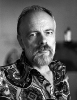

Родители Филипа Дика были англо-ирландско-шотландского происхождения. Отец, Джозеф Эдгар Дик. Мать, Дороти
Киндред. Филип Киндред Дик родился в Чикаго 16 декабря 1928 года за шесть недель до срока. Вместе с ним родилась
сестра-двойняшка Джейн Шарлотта. Дороти рожала дома и не подозревала, что вынашивает двойню.
В 1943 году он поступил в среднюю школу Беркли. В школе Филип проучился три года. Больше всего его интересовали
два предмета — английский и немецкий языки, но обучение омрачалось сильным головокружением и приступами паники
из-за различных фобий.
Осенью 1949 года Дик непродолжительное время посещал Калифорнийский университет в Беркли, где изучал философию,
психологию, историю, немецкую литературу и другие предметы, а также был вынужден посещать обязательный курс
военной подготовки, несмотря на свой пацифизм.
Клео Апостолидес — вторая жена Филипа. Их свадьба состоялась 14 июня 1950 года. Апостолидес была социалистом и часто принимала участие в левой деятельности, и якобы из-за этого их посещало ФБР. Позже пара подружилась с агентом ФБР. Дик и Апостолидес расстались в 1959 году.
Филип К. Дик интересовался писательством с тех пор, как много лет назад вернулся в Калифорнию со своей матерью. Его первый рассказ был опубликован в 1951 году, и вскоре он начал писать полный рабочий день.
Цитаты
Тишина. Она обрушилась на Джона со всех сторон, сдавила его с неодолимой парализующей силой. Вязкой гнетущей волной поднималась она снизу, от замызганного серого паласа, душными клубами накатывала из кухни, от мертвой, еще до Джона поломанной бытовой техники. Тишина сочилась из навсегда потухшего торшера, мешаясь с тишиной, беззвучно падавшей откуда-то сверху, с загаженного мухами потолка. Перечислять бессмысленно – тишина стремилась заместить собой все нормальные, осязаемые вещи.
| Год | Название фильма |
|---|---|
| 1982 | Бегущий по лезвию |
| 1990 | Вспомнить все |
| 2002 | Особое мнение |
| 2006 | Помутнение |
| 2010 | Свободное радио Альбемута |
| 2015 | Человек в высоком замке |